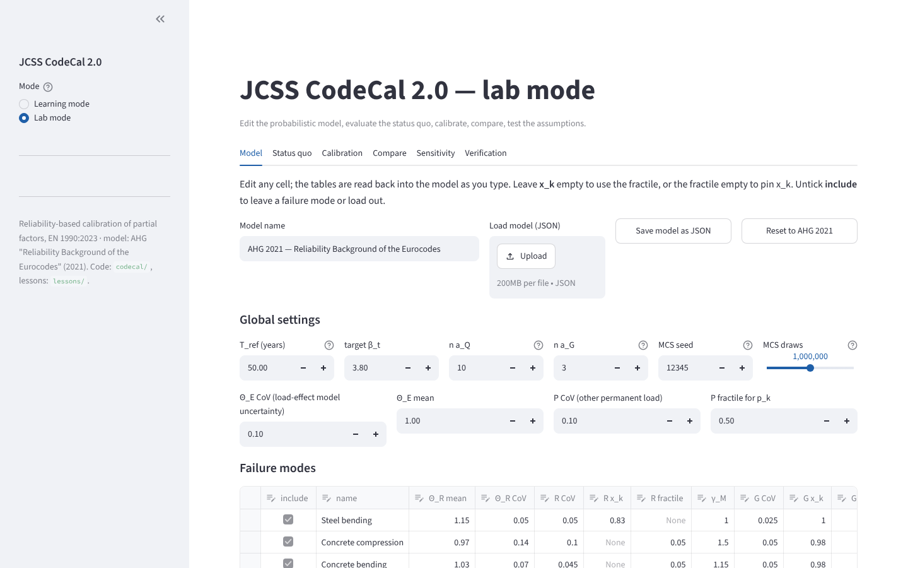
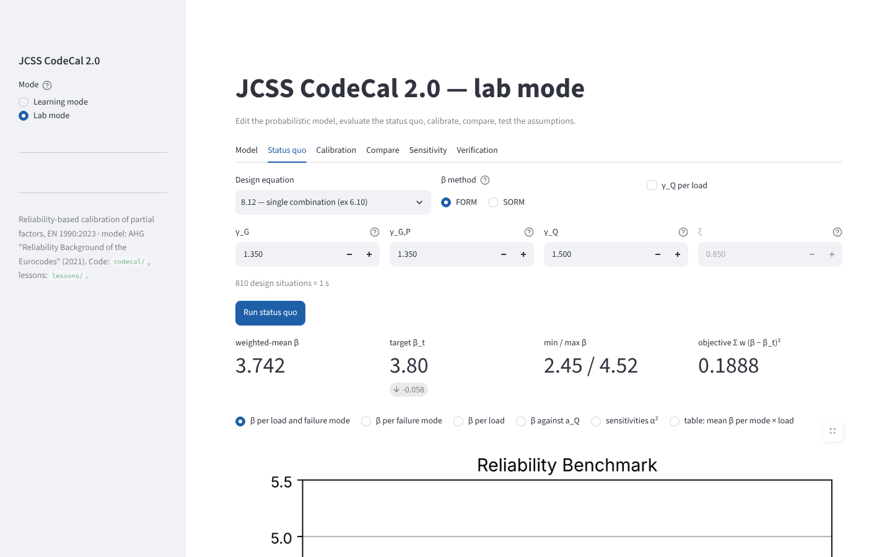
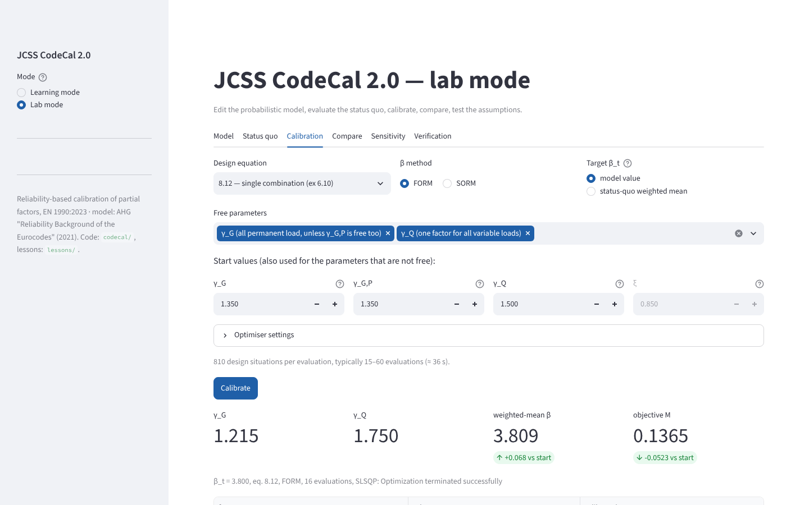
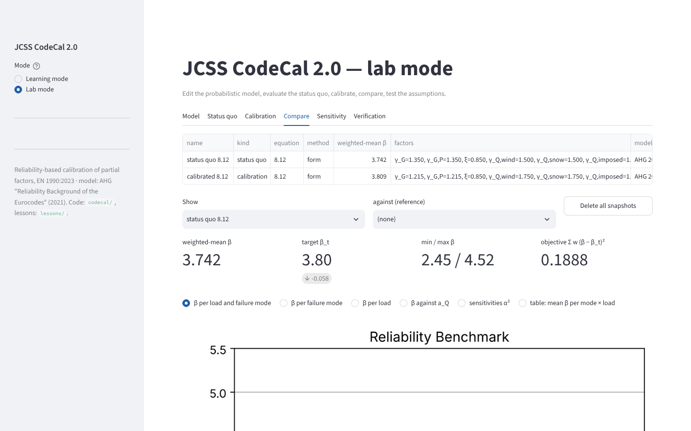
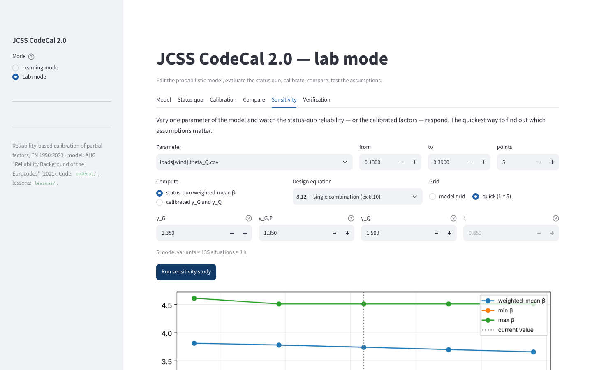
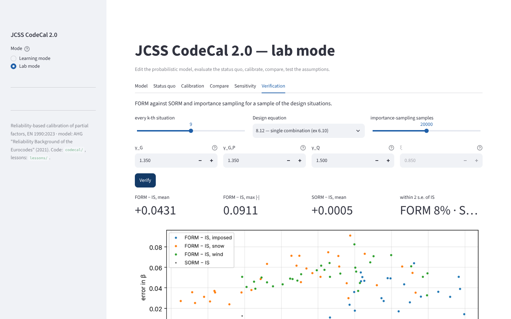

10. Lab mode#
The lab mode is the research tool. Its six tabs follow the workflow of a calibration study: define the model, look at the status quo, calibrate, compare alternatives, test the assumptions, verify the numerics. Every run reads the current model from the Model tab, and every result remembers the model it was computed with — if the model changes afterwards, the result is marked as stale.
10.1. Model#


Fig. 10.1 The Model tab: global settings and the two editable tables.#
Everything that defines the probabilistic model is on this tab:
- Global settings
reference period \(T_{ref}\), target \(\beta_t\), the number of \(a_Q\) and \(a_G\) values per failure mode, the seed and the number of Monte-Carlo draws for the characteristic loads, the CoV and mean of \(\Theta_E\), and the CoV and fractile of the other permanent load \(P\).
- Failure modes
one row per mode: the mean and CoV of \(\Theta_R\), the CoV of \(R\) and either a pinned \(x_k\) or a fractile (leave the other cell empty), \(\gamma_M\), the CoV and \(x_k\)/fractile of the self-weight, the \(a_Q\) and \(a_G\) ranges and the weight. Untick include to leave a mode out without deleting it; add rows with the + at the bottom of the table, delete rows by selecting them and pressing Delete.
- Variable loads
one row per load: the mean and CoV of \(\Theta_Q\), the CoV of the 50-year maximum, \(T_{input}\) (the period the CoV refers to) and \(T_{basic}\) (the period of independent re-occurrence), the fractile that defines \(q_k\), an optional pinned \(q_k\), \(\psi_0\) and the weight.
The tables are read back into the model as you type (a cell is committed with Enter or when you leave it). The model is validated on every change: problems are listed in words — “failure mode 3 (Concrete bending): weight must be ≥ 0” — and the run buttons of the other tabs are hidden until the model is consistent. If the model is valid, the differences from the AHG 2021 model are listed, and the built model’s random variables (with the simulated characteristic values) can be inspected.
Save model as JSON downloads the current model; Load model reads one back (the file is validated, with the same messages); Reset to AHG 2021 restores the default. The JSON format is described in Model files (JSON); the same file can be used from a script.
10.2. Status quo#


Fig. 10.2 The Status quo tab: β for every design situation for one set of partial factors.#
Choose the combination rule, the β method (FORM, or SORM at about twice the cost), whether to give \(\gamma_Q\) per load, and the factors; the caption estimates the running time. The result panel has the metrics (weighted-mean β, the distance to the target, the min/max, the objective), a warning if FORM did not converge for some situations, the six views (see the learning mode), a Save snapshot row and a CSV download of the sweep.
10.3. Calibration#


Fig. 10.3 The Calibration tab after a run: calibrated factors, the metrics, the views with the start values as reference.#
The free parameters, the combination rule and the method as in the learning mode, plus:
the target: the model’s \(\beta_t\), or the status-quo weighted mean of the start values (the relative calibration of Reliability-based code calibration);
the start values, which are also the fixed values of the parameters that are not free;
optimiser settings:
ftol, the finite-difference step, and bounds in the formgamma_Q=1.2:2.5, xi=0.7:1.0(defaults: γ between 0 and 1.5 or 1 and 3.5, ξ between 0.5 and 1.2; with ξ free, γ_G is kept ≥ 1).
The progress display reports every evaluation. The result shows the calibrated factors (a warning if one sits on a bound, or if SLSQP stopped without declaring convergence), the weighted-mean β before and after, the objective, the table of all factors, the views against the start values, the optimiser history, a snapshot row and a CSV download.
10.4. Compare#


Fig. 10.4 The Compare tab: two snapshots overlaid, and the calibrated factors of all calibrations side by side.#
Every status-quo or calibration result can be saved as a named snapshot (model, factors, equation, method, the sweep). This tab lists them, overlays any snapshot against any other in the six views (the metrics show the difference of the weighted means), and — when at least two calibrations are saved — draws their factors side by side. Snapshots live in the browser session; download the CSVs if you want to keep them.
10.5. Sensitivity#


Fig. 10.5 The Sensitivity tab: one model parameter varied over a range, the response of the status-quo reliability or of the calibrated factors.#
Pick any numeric parameter of the model — a CoV, a bias, a weight, a basic period, a fractile, \(\psi_0\), the target, \(T_{ref}\) — give a range and a number of points, and choose what to compute: the status-quo weighted-mean β (one sweep per point) or the calibrated \(\gamma_G\) and \(\gamma_Q\) (one calibration per point; use the quick grid). The plot shows the response with the current value marked; the table is downloadable. This is the quickest way to find out which assumptions of a model matter.
10.6. Verification#


Fig. 10.6 The Verification tab: FORM against SORM and importance sampling for a sample of the design situations of the current model.#
As in the learning mode, for the edited model: every k-th situation, SORM and importance sampling, the error statistics, the plot against β, and the table by load and dominant variable; a convergence warning if FORM failed somewhere.
10.7. Error handling#
The interface never leaves a blank page. An inconsistent model is reported as a list of problems before anything runs; a failing computation is reported as one readable sentence with the traceback in a Details expander; a model loaded from JSON with values outside the ranges the widgets offer is clamped with a warning. If you do hit an unexpected error, the expander says so — please report it with the model JSON attached.